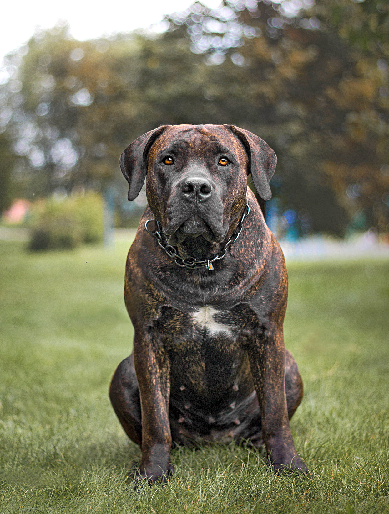
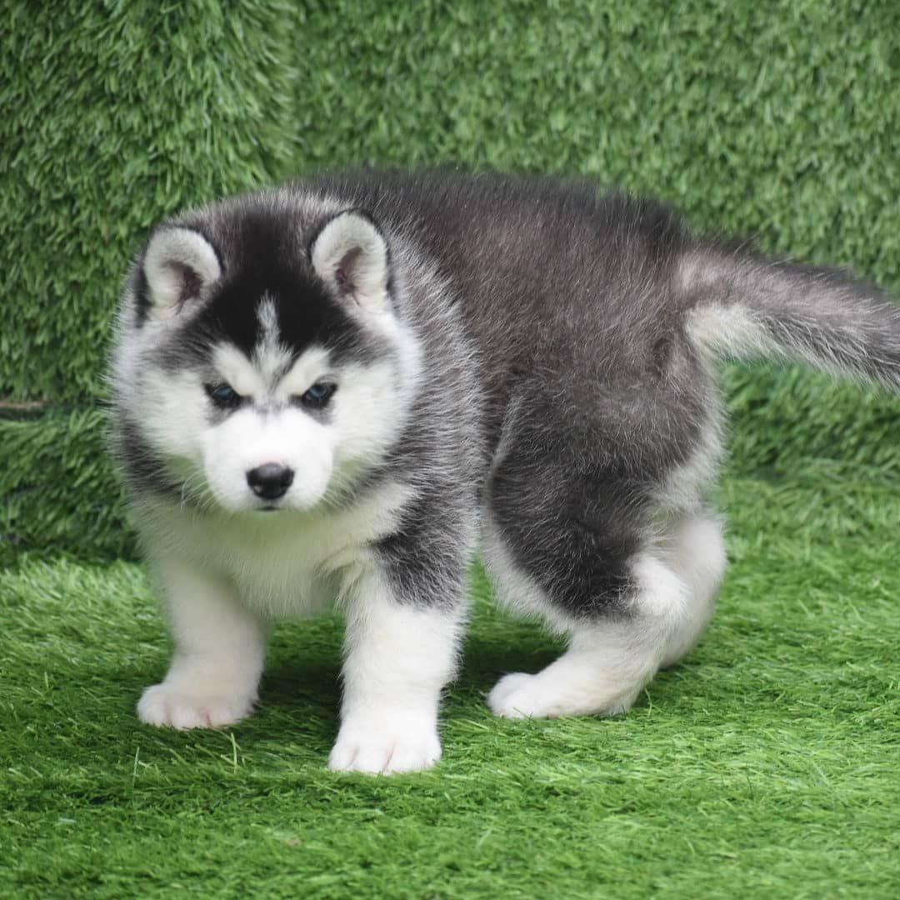
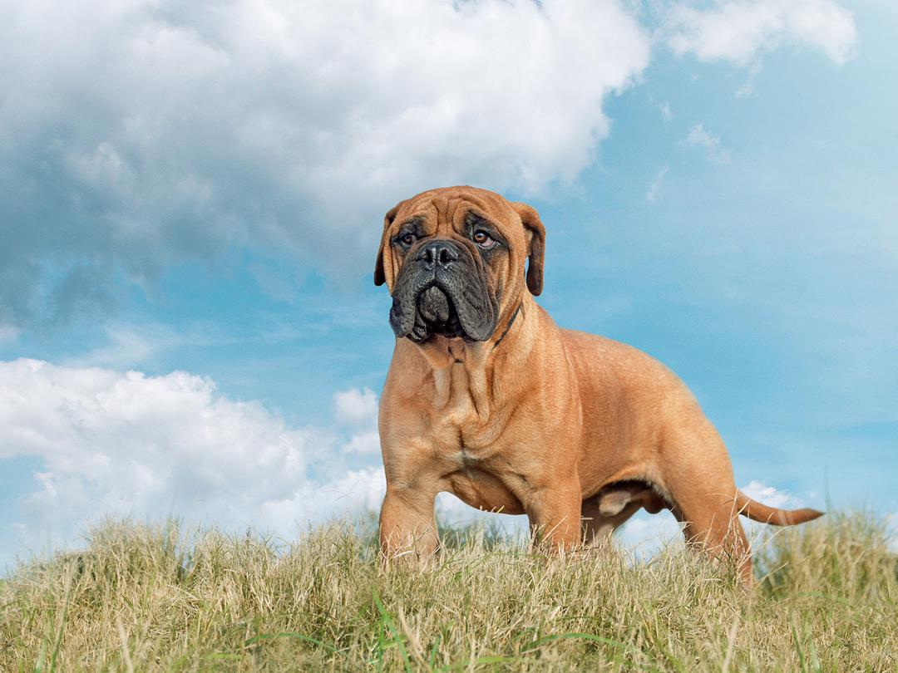
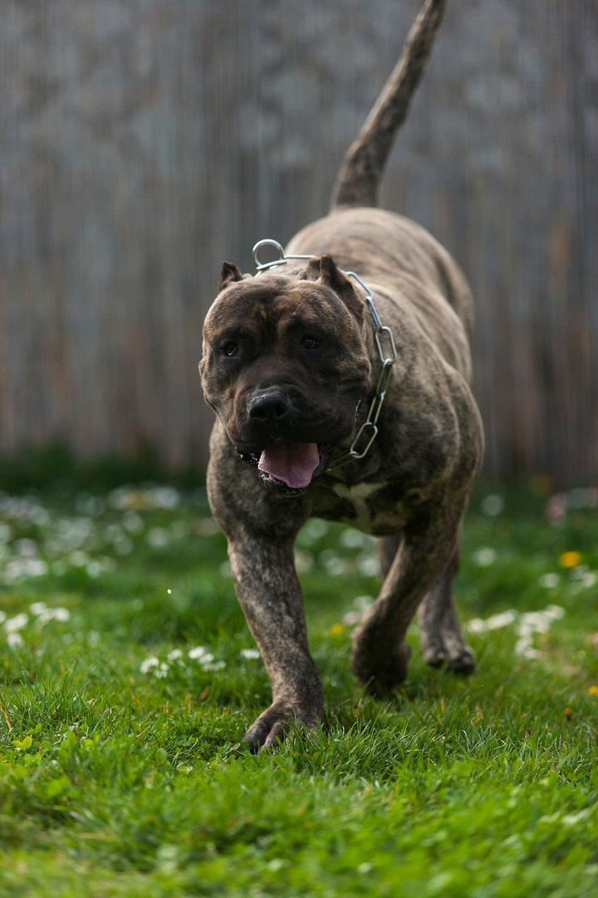
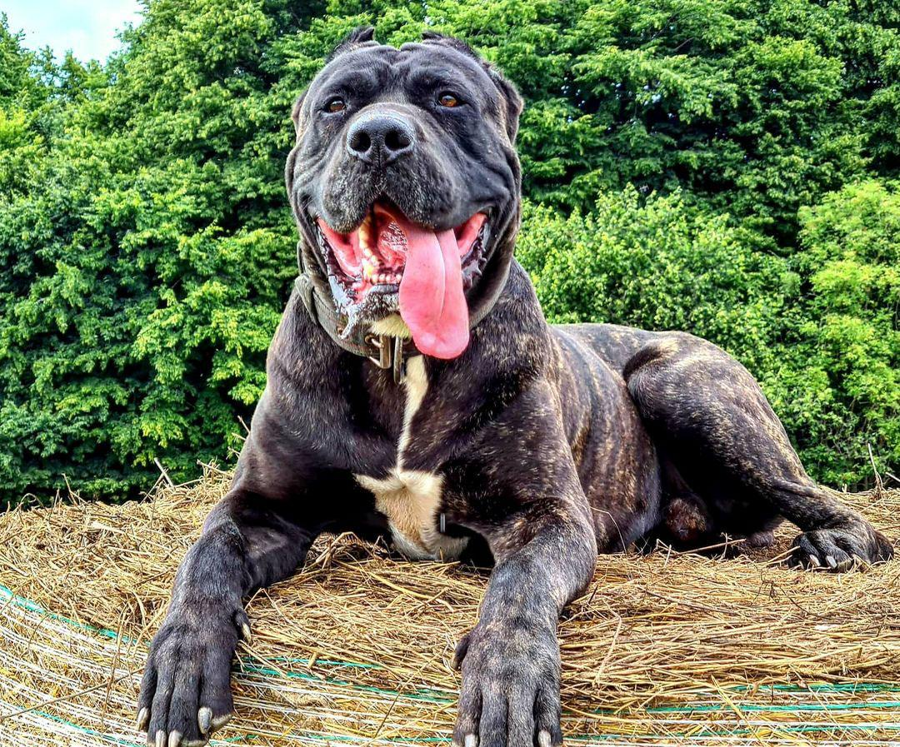
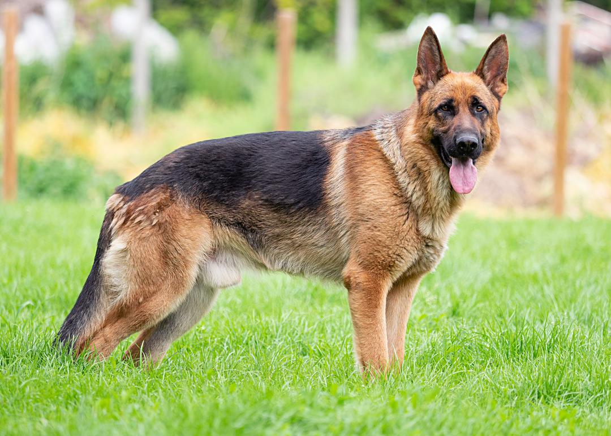
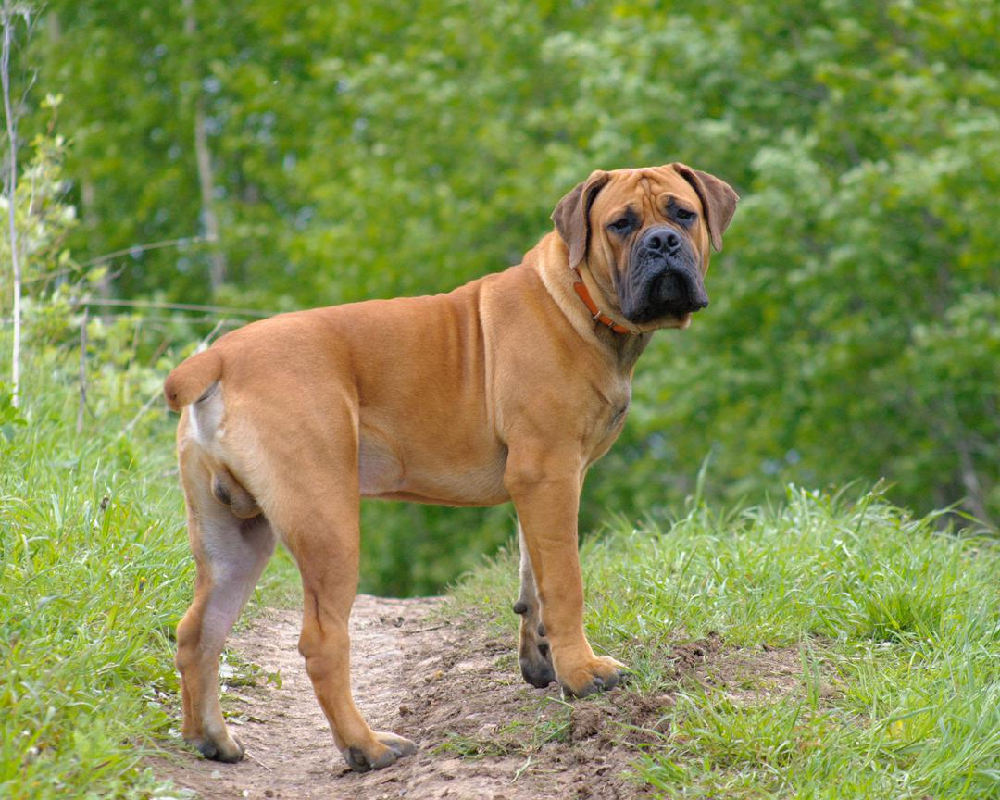

About US
 A pet, or companion animal, is an animal kept primarily for a person's company or entertainment rather than as a working animal, livestock, or a laboratory animal. Popular pets are often considered to have attractive appearances, intelligence, and relatable personalities, but some pets may be taken in on an altruistic basis (such as a stray animal) and accepted by the owner regardless of these characteristics. Two of the most popular pets are dogs and cats. Other animals commonly kept include rabbits; ferrets; pigs; rodents such as gerbils, hamsters, chinchillas, rats, mice, and guinea pigs; birds such as parrots, passerines, and fowls; reptiles such as turtles, lizards, snakes, and iguanas; aquatic pets such as fish, freshwater snails, and saltwater snails; amphibians such as frogs and salamanders; and arthropod pets such as tarantulas and hermit crabs. Small pets may be grouped together as pocket pets, while the equine and bovine group include the largest companion animals. This blog speaks about my pet dog and not any other animal aside dogs. In my blog, you'll find awesome comments from dog lovers all around the world as well as amazing pet dog stories. We receive stories from people who love dogs as pets and publish them here on! Kindly find your way through my blog and explore more interesting contents about my pet dogs. ENJOY!
Serbian Husky Puppy
A pet, or companion animal, is an animal kept primarily for a person's company or entertainment rather than as a working animal, livestock, or a laboratory animal. Popular pets are often considered to have attractive appearances, intelligence, and relatable personalities, but some pets may be taken in on an altruistic basis (such as a stray animal) and accepted by the owner regardless of these characteristics. Two of the most popular pets are dogs and cats. Other animals commonly kept include rabbits; ferrets; pigs; rodents such as gerbils, hamsters, chinchillas, rats, mice, and guinea pigs; birds such as parrots, passerines, and fowls; reptiles such as turtles, lizards, snakes, and iguanas; aquatic pets such as fish, freshwater snails, and saltwater snails; amphibians such as frogs and salamanders; and arthropod pets such as tarantulas and hermit crabs. Small pets may be grouped together as pocket pets, while the equine and bovine group include the largest companion animals.
Bullmastiff
Bullmastiffs are gentle and affectionate with family members. Their generally calm, easy-going natures make them good dogs for families with reasonably well-behaved children. However, the bullmastiff's laid-back attitude with family members is likely to change when a stranger enters the picture. These dogs tend to be quite suspicious of people outside the family. For all his family-oriented loyalty, the bullmastiff is no pushover. He can be an independent thinker, which can make training a challenge. He also may be less tolerant of a family's animal members than of its human members. Caution may be in order if you're thinking of adding a bullmastiff to your menagerie.
Perro De Pressa Canario
The Presa Canario is a Spanish breed of large dog of mastiff or catch dog type. It originates in the autonomous region of the Canary Islands, and is found mostly in the islands of Gran Canaria and Tenerife. It was formerly known as the Dogo Canario. It was traditionally used as a guard dog, as a herding dog for both sheep and cattle, and for dog-fighting, which was legal in Spain until 1936 and may have continued clandestinely thereafter.The Presa Canario is a large dog with a heavy muscular body. Dogs stand 60-66 cm at the withers and weigh some 50-65 kg; bitches stand about 56-62 cm and weigh approximately 10 kg less. The head is broad, massive, square, and powerful brachycephalic shape. Proper head and good expression are part of the breed standard, and are manifest in the best breed specimens. The ears are normally cropped, both to create a more formidable expression and to prevent damage while working with cattle. If cropped, the ears stand erect. In countries where ear-cropping is banned, the ears are close fitting to the head; they hang down and should be pendant or "rose"-shaped. The upper lip is pendulous, although not excessively. Seen from the front, the upper and lower lips come together to form an inverted V. The flews are slightly divergent. The inside of the lips is a dark colour.
Bandog
This intimidating breed boasts several distinctive characteristics, which is unsurprising as the modern Bandog has been developed from a variety of stock breeds, including the English Mastiff, Neapolitan Mastiff, Pit Bull Terrier and American Staffordshire Terrier. Because of this, no unified breed standard exists for the Bandog and appearance varies greatly. The characteristic traits often seen include a powerful and stocky build, a broad skull and muzzle, strong limbs and upright, triangular ears. Selectively bred for its strength, stamina, confidence and fearlessness, the Bandog of old is both imposing and independent-minded, requiring firm leadership and consistent obedience training from puppyhood. Not particularly suited to relaxed domestic life, the Bandog needs regular physical and mental enrichment in order to prevent boredom and destructive behaviours in the home. Compatible with other house pets only when introduced gradually or raised with them, the Bandog should be observed at all times, especially around children. On average, a healthy Bandog will weigh 35-65 kg depending on its classification and gender, with a life expectancy of 10 years.
German Shepherd
The German Shepherd[a] or Alsatian is a German breed of working dog of medium to large size. The breed was developed by Max von Stephanitz using various traditional German herding dogs from 1899. It was originally bred as a herding dog, for herding sheep. It has since been used in many other types of work, including disability assistance, search-and-rescue, police work and warfare. It is commonly kept as a companion dog, and according to the Fédération Cynologique Internationale had the second-highest number of annual registrations in 2013. German Shepherds are medium to large-sized dogs. The breed standard height at the withers is 60-65 cm (24-26 in) for males, and 55-60 cm (22-24 in) for females. German Shepherds are longer than they are tall, with an ideal proportion of 10 to 8+1⁄2. The AKC official breed standard does not set a standard weight range. They have a domed forehead, a long square-cut muzzle with strong jaws and a black nose. The eyes are medium-sized and brown. The ears are large and stand erect, open at the front and parallel, but they often are pulled back during movement. A German Shepherd has a long neck, which is raised when excited and lowered when moving at a fast pace as well as stalking. The tail is bushy and reaches to the hock. German Shepherds have a double coat which is close and dense with a thick undercoat. The coat is accepted in two variants: medium and long. The gene for long hair is recessive, and therefore the long-haired variety is rarer. Treatment of the long-haired variation differs across standards; it is accepted but does not compete against standard-coated dogs under the German and UK Kennel Clubs while it can compete with standard-coated dogs, but is considered a fault, in the American Kennel Club. The FCI accepted the long-haired type in 2010, listing it as the variety b, while the short-haired type is listed as the variety a. Most commonly, German Shepherds are either tan/black or red/black. Most colour varieties have black masks and black body markings which can range from a classic "saddle" to an overall "blanket". Rarer colour variations include sable, pure-black, pure-white, liver, silver, blue, and panda varieties. The all-black and sable varieties are acceptable according to most standards; however, the blue and liver are considered to be serious faults and the all-white is grounds for instant disqualification from showing in conformation at All Breed and Specialty Shows.
Boerboel
In South Africa, the Animal Improvement Act (62 of 1998) defines a breed of animal indigenous to or developed in the republic to be a landrace, therefore the Boerboel is regarded as a landrace in the republic. The Act grants powers to a registered "animal breeders society", and the South African Boerboel Breeders' Society (SABBS) is a registered animal breeders society. The SABBS is the only organisation authorised under the Act to officially register Boerboels. As legally registered custodian of the Boerboel dog breed, SABBS is responsible for the standards that govern identification, recording, evaluation and improvement of the breed. The Kennel Union of South Africa still recognises those Boerboels registered on its books.The Boerboel is a large dog, with a strong bone structure and well-developed muscles. The head is large, and the muzzle short. The coat is short and sleek with dense hair coverage. The recognised colours are brindle, fawn, and brown; it may or may not have a black mask. There is one minor divergence between breed standards; the Kennel Union of South Africa does not accept black but SABBS does. The dogs show courage when threatened; they may display aggression toward other dogs or strangers.
- All Dog Breeds-Complete List Of Dog Profiles
- 45 Best Large Dog Breeds For People Who Have a Lot Of Love To Give
- The Top 20 Most Friendly Dog Breeds
- Spending on pets: “Tails” from the Consumer Expenditure Survey
- The relationship between attachment to pets and mental health: the shared link via attachment to humans